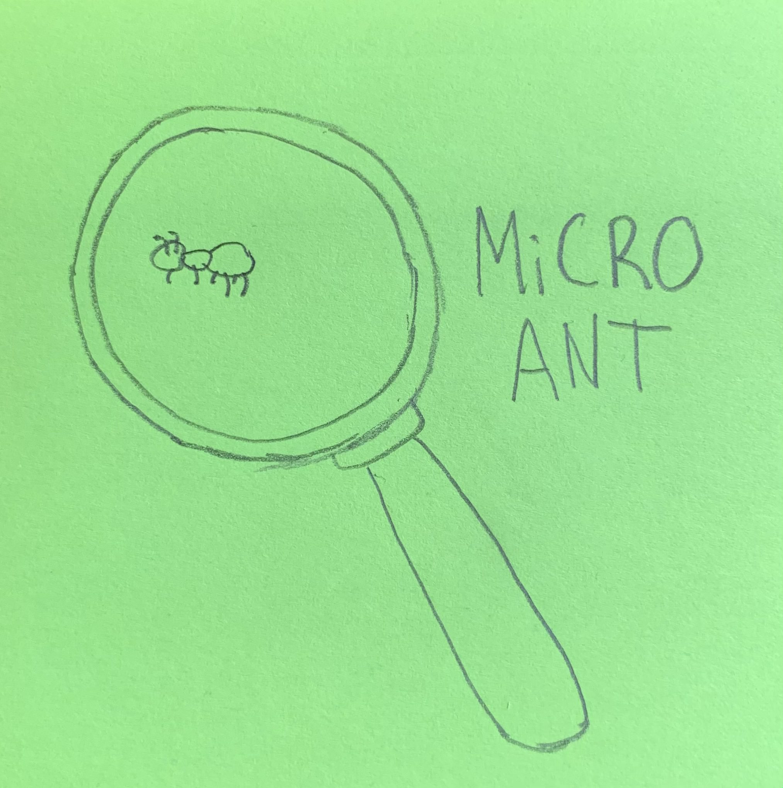

The Portfolio of Max Tennant
Projects
- The MiCRO ANT Game Engine

This is my own game engine, built from scratch and guided by Austin Yarger for the Game Engine Architecture class at the University of Michigan.
It features a C++ codebase with Lua as a scripting language (connected with LuaBridge) and JSON configuration files (connected with RapidJSON).
Many of the engine features were built in the main portion of class, including SDL for all rendering and inputs, Box2D for all game physics, and GLM for basic math/vector functions.
A novel feature that is unique from others in my class is FMOD integration, which allows for much more dynamic/expressive audio features.
The video below shows some basic functionality of the engine with a large focus on the FMOD features.
This is a remaster of a single dungeon from the NES Legend of Zelda in Unity. It was developed using C# and Visual Studio for script creation,
Photoshop for novel sprite creation, and the BeepBox website for novel music arrangements/sound effects.
Press the 1 button for cheats, and the 4 button for a new level and mechanic.
In this project, I was responsible for most aspects of development except for enemies - and I also worked on a couple of enemies like the Blade Trap.
My partner did have to rework a few things related to enemies as he went through enemy development, but I built the groundwork for all facets of game
that you see in the finished project. I also developed the new mechanic, designed the level, and created the appropriate sprites/sounds.
Enjoy!
This is an original game of mine in which you play as a square who has the ability to move, jump, wall climb, and grapple.
You yearn to lose your edges and become a circle, so you hunt liminal space for the elusive 12 pie pieces that are rumored to turn the collector into a circle.
Solve platforming puzzles to reach the end of the game. There is no cheat mode in this game, so rely on your skill to make it through the entire game. Good luck!
I was responsible for everything in this game, from art & music, to gameplay & level design. It was developed using C# and Visual Studio for script creation,
Photoshop for novel sprite creation, and the BeepBox website for novel music arrangements/sound effects.
In Wisp, you play as a freshman at College Tech who is suddenly transported to a warped, distorted version of reality. You must escape the dorms, solving puzzles
and avoiding mysterious shadow monsters, armed only with your trusty lighter. This is a horror/puzzle game, so make sure to play with headphones in a dark environment!
This was the final project of EECS 494; at the showcase, we earned sixth place in the class. I was mainly responsible for the functionality of the enemy (no visuals),
all of the final sound effects, and creating interactible objects/adding info text for just about everything you could possibly interact with. This project underwent
a lot of changes during development, and I am really happy with our final result. Please enjoy Wisp!